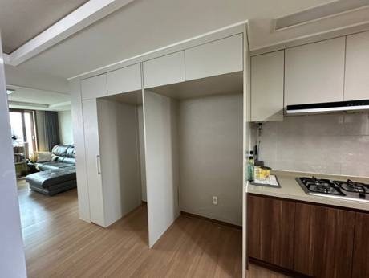
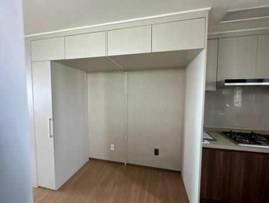
쓰던 양문형 냉장고가 갑자기 고장 나 LG 오브제를 살 예정이었어요. 입주 당시 옵션 냉장고장 가운데 기둥 때문에 키친핏으로 설치하기 어려웠어요.
상부장을 내리기 위해 문짝을 먼저 떼고 순서가 바뀌지 않게 정리했어요.
높고 무거운 상부장을 조심스럽게 내렸어요.
지지대로 받쳐 둔 상태에서 가운데 칸막이를 안전하게 제거했어요.
천장을 보강해 상부장을 튼튼하게 다시 달고 문짝도 다시 설치했어요.
칸막이 자리의 도배 안 된 벽을 몰딩으로 깔끔하게 마감했어요.
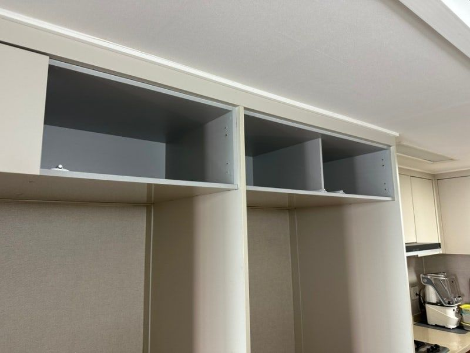
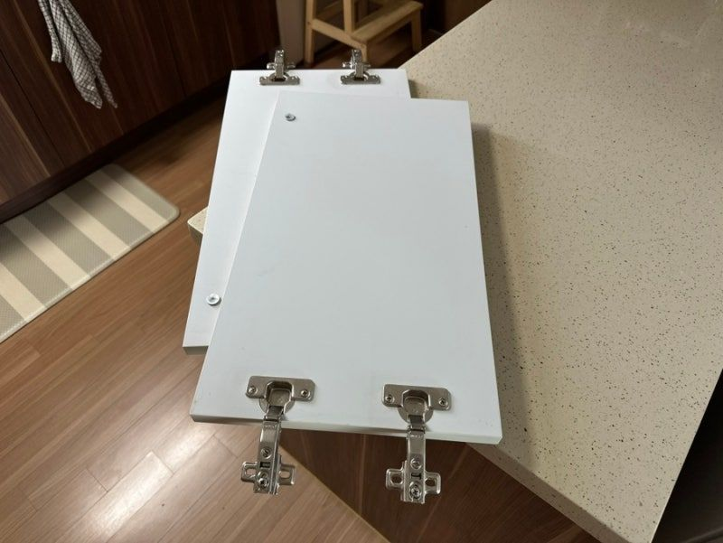
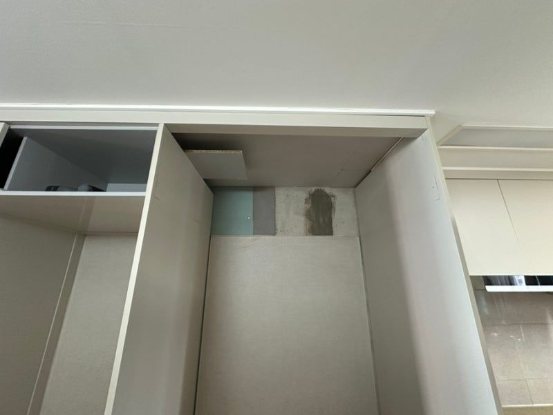
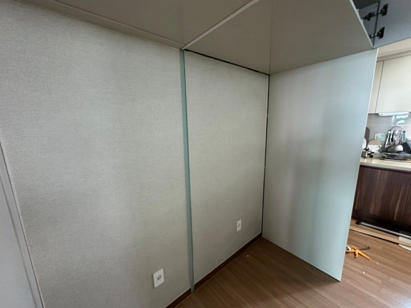
가운데 기둥이 사라져 키친핏 냉장고를 문제없이 설치할 수 있는 자리가 생겼어요.
상부장은 높고 무거워서 직접 해 보신다면 꼭 2명이 함께 작업하는 걸 권해요.
비슷한 현장
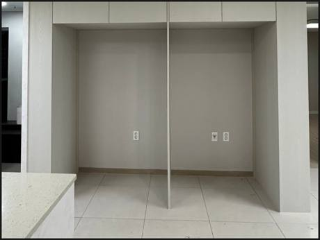
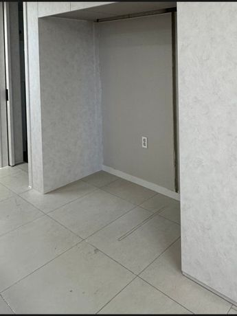
두 대용 구조를 대형 냉장고 한 대 자리로 넓히고, 남는 폭은 수납장으로.
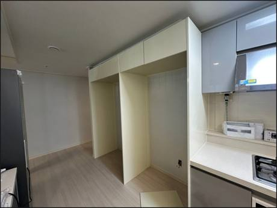
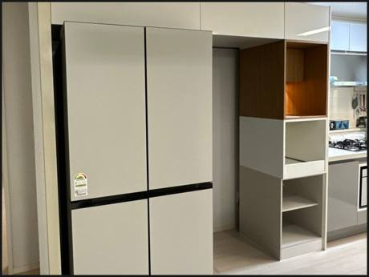
쓸 수 있는 부분은 남기고 상부장, 수납장, 슬라이드 밥솥장을 새로 제작.
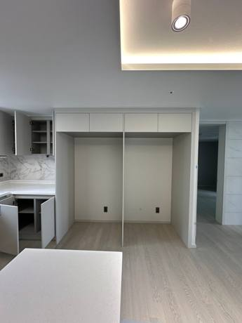
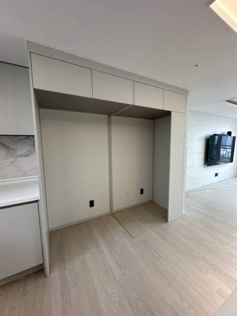
키친핏 냉장고가 안 들어가던 집. 상부장을 살려 비용을 아끼고 당일 사용.
현장 사진, 동네, 하고 싶은 일을 문자로 보내주세요. 작업 중엔 전화를 못 받을 때가 많아 문자가 가장 빨라요.